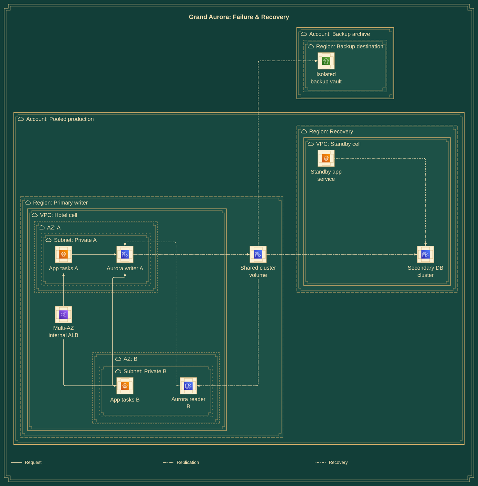

Grand Aurora: Failure & Recovery
Art Deco · focused resilience view
Application replicas cover task/AZ failures. Aurora readers can become writers. A secondary region can lag. A separately controlled backup serves a different recovery purpose.
Which failures do replicas, standby regions and backups actually cover?
Whole diagram fitted. For larger labels, turn off “Fit whole diagram” and pan, or open the full-size SVG.



Mermaid source
Download .mmdSemantic content and gallery-only boundary/flow annotations stay in this file. The drawing treatment is applied after layout.
architecture-beta
%% Focused companion: one pooled cell. AZ names are symbolic; standby region is not an active booking writer.
%% @boundary pooled account
%% @boundary primary region
%% @boundary vpc vpc
%% @boundary aza az
%% @boundary privateA subnet
%% @boundary azb az
%% @boundary privateB subnet
%% @boundary standby region
%% @boundary standbyVpc vpc
%% @boundary backups account
%% @boundary backupRegion region
group pooled(cloud)[Account: Pooled production]
group primary(cloud)[Region: Primary writer] in pooled
group vpc(cloud)[VPC: Hotel cell] in primary
group aza(cloud)[AZ: A] in vpc
group privateA(cloud)[Subnet: Private A] in aza
group azb(cloud)[AZ: B] in vpc
group privateB(cloud)[Subnet: Private B] in azb
group standby(cloud)[Region: Recovery] in pooled
group standbyVpc(cloud)[VPC: Standby cell] in standby
group backups(cloud)[Account: Backup archive]
group backupRegion(cloud)[Region: Backup destination] in backups
service alb(aws:elb)[Multi-AZ internal ALB] in vpc
service appA(aws:fargate)[App tasks A] in privateA
service appB(aws:fargate)[App tasks B] in privateB
service writer(aws:aurora)[Aurora writer A] in privateA
service reader(aws:aurora)[Aurora reader B] in privateB
service volume(aws:aurora)[Shared cluster volume] in primary
service standbyDb(aws:aurora)[Secondary DB cluster] in standbyVpc
service standbyApp(aws:fargate)[Standby app service] in standbyVpc
service vault(aws:backup)[Isolated backup vault] in backupRegion
%% @edge alb appA request | ALB spans enabled AZ subnets and sends healthy requests to private tasks A.
alb:T --> B:appA
%% @edge alb appB request | Independent task replicas in another AZ; security groups constrain ingress.
alb:B --> L:appB
%% @edge appA writer request | Booking transactions use the cluster writer endpoint, not the reader endpoint.
appA:R --> L:writer
%% @edge appB writer request | Tasks in AZ B can reach the same writer through permitted intra-VPC traffic.
appB:L --> B:writer
%% @edge writer volume replication | Aurora writer persists to its distributed cluster volume; storage spans three AZs independently of app placement.
writer:R --> L:volume
%% @edge volume reader replication | Reader shares cluster storage and applies updates; not a second independent writable database.
volume:B --> R:reader
%% @edge reader writer recovery | Eligible reader promotion changes the writer role after failure; this is a recovery transition, not a reverse data stream.
reader:L --> T:writer
%% @edge volume standbyDb replication | Assumed Aurora Global Database asynchronously replicates to the supported recovery region; lag and data loss are possible.
volume:R --> L:standbyDb
%% @edge standbyApp standbyDb recovery | Standby activation follows fencing of the old writer and explicit database promotion.
standbyApp:R --> T:standbyDb
%% @edge volume vault recovery | Scheduled AWS Backup cross-account copy needs supported resources, organization configuration, backup role and KMS policies.
volume:T --> L:vault
Reproduce this collection from the Beautiflow repository:
bun scripts/build-boring-diagrams.tsMeasured evidence
Full evidence JSON- Native geometry
- 0 findings across 8 measured checks
- Styled render integrity
- 0 element, plain-label, ID or reference findings
- Authored annotations
- 11 boundaries · 10 relationship meanings
- AWS configuration
- Not validated
These checks do not establish visual quality, every decorative mark, browser glyph ink, edge-label boxes or deployed AWS correctness. Architecture has guarded transforms, not automatic polish.
Source SHA-256
35a88f454ffc8f34d907c198ff710e71aa4b67359f50df0747f80d74f878efb7Read all 10 relationships
Line patterns distinguish requests, credentials, events, replication, configuration/control and recovery. Hover a styled connector for its meaning. Native layout preserves routes but does not include these gallery annotations.
| From | To | Kind | Meaning |
|---|---|---|---|
| Multi-AZ internal ALB | App tasks A | request | ALB spans enabled AZ subnets and sends healthy requests to private tasks A. |
| Multi-AZ internal ALB | App tasks B | request | Independent task replicas in another AZ; security groups constrain ingress. |
| App tasks A | Aurora writer A | request | Booking transactions use the cluster writer endpoint, not the reader endpoint. |
| App tasks B | Aurora writer A | request | Tasks in AZ B can reach the same writer through permitted intra-VPC traffic. |
| Aurora writer A | Shared cluster volume | replication | Aurora writer persists to its distributed cluster volume; storage spans three AZs independently of app placement. |
| Shared cluster volume | Aurora reader B | replication | Reader shares cluster storage and applies updates; not a second independent writable database. |
| Aurora reader B | Aurora writer A | recovery | Eligible reader promotion changes the writer role after failure; this is a recovery transition, not a reverse data stream. |
| Shared cluster volume | Secondary DB cluster | replication | Assumed Aurora Global Database asynchronously replicates to the supported recovery region; lag and data loss are possible. |
| Standby app service | Secondary DB cluster | recovery | Standby activation follows fencing of the old writer and explicit database promotion. |
| Shared cluster volume | Isolated backup vault | recovery | Scheduled AWS Backup cross-account copy needs supported resources, organization configuration, backup role and KMS policies. |
Architecture assumptions & omissions
- AZ A/B are illustrative, not deployable AZ identifiers. ALB nodes require enabled subnet mappings in both AZs; its subnet mappings and VPC Link ingress are aggregated. Task and DB security groups need explicit rules.
- Aurora compute instances use DB subnets; the shared cluster volume is regional managed infrastructure with storage across three AZs. A reader is not a separately writable replica. The recovery arrow denotes role promotion, not reverse replication.
- Aurora Global Database requires supported versions/regions and asynchronously replicates storage. Standby activation requires fencing the previous writer, database promotion and traffic/credential changes. Lag, loss and manual recovery decisions remain possible.
- Backups assume a supported encrypted cross-account copy configuration, dedicated roles, KMS grants and restore tests. A backup is not a hot replica. No RTO/RPO, zero-loss failover or production readiness is claimed. This view expands one pooled cell, not every enterprise deployment.